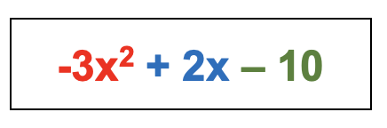

MATEMATICAS
Trabajo para contenido de página web 1. La suma algebraica de dos o más polinomios, consiste agrupar sus términos semejantes para luego sumarlos según sus signos y formar un solo polinomio.
Para sumar polinomios es necesario reconocer cuáles son los términos semejantes, es decir; los que tienen igual variable y potencia.
Por ejemplos en los polinomios (-6x2 + 9x – 6) y (3x2 – 7x – 4), se pueden identificar sus términos semejantes:

En el ejemplo dado, se agrupan en los pares de monomios que tienen la misma variable y exponente para poder sumarse.

Es importante considerar los signos que se antepone a cada término, así para 9x + (-7x) para eliminar el paréntesis se multiplican el signo (+) que está fuera del paréntesis por el signo (-) que acompaña a -7x, donde (+) * (-) = (-).
Una vez sumados cada par de términos considerando sus signos, se obtiene como resultados el polinomio:

Entonces, la adición de polinomios consiste en sumar los coeficientes de los monomios que tengan la misma variable e igual grado.
Es importante destacar que los polinomios se pueden reorganizar usando la propiedad conmutativa y asociativa sin cambiar su valor.
2.Para restar dos o más polinomios, solo tenemos que combinar términos semejantes y considerar el orden de las operaciones. Algo importante que debe ser tomado en cuenta es distinguir los términos con signos “más” y “menos” en cada polinomio.
Seguimos los siguientes pasos para restar polinomios:
Paso 1: Eliminar todos los paréntesis. Para facilitar la visualización, es recomendable escribir el problema y cada proceso de forma vertical. Cuando eliminamos los paréntesis, tenemos que distribuir el signo negativo, lo cual hará que cada uno de los términos cambie de signo.
Paso 2: Combinar términos semejantes. Si es que escribimos los pasos de forma vertical, la combinación de términos semejantes resulta más fácil. Recuerda que, los términos semejantes son términos que tienen las mismas variables con los mismos exponentes.
EJERCICIO 1 Realiza la sustracción de polinomios: ( 6 x + 8 y ) − ( 3 x − 2 y ) (6x+8y)−(3x−2y).
Solución
Tenemos que eliminar los paréntesis. Para realizar esto, tenemos que tomar en cuenta el signo negativo en frente del segundo polinomio, por lo que cambiamos de signo a todos los términos del segundo polinomio.
Luego, tenemos que agrupar términos semejantes:
(6x+8y)−(3x−2y) = 6 x + 8 y − 3 x + 2 y
=6x+8y−3x+2y = 6 x − 3 x + 8 y + 2 y
=6x−3x+8y+2y = 3 x + 10 y
=3x+10y
Productos notables: ¿Qué son?
¿Qué son los productos notables? Los productos notables son simplemente multiplicaciones especiales entre expresiones algebraicas las cuales sobresalen de las demás multiplicaciones por su frecuente aparición en matemáticas. De ahí el nombre producto, que hace referencia a "multiplicación" y notable, que hace referencia a su "destacada" aparición.
Así bien, una vez aprendido dichos productos notables, no habrá necesidad de comprobar dicha multiplicación mecánicamente, es decir, solo debemos seguir las reglas aprendidas con anterioridad que caracterizan a cada producto notable.